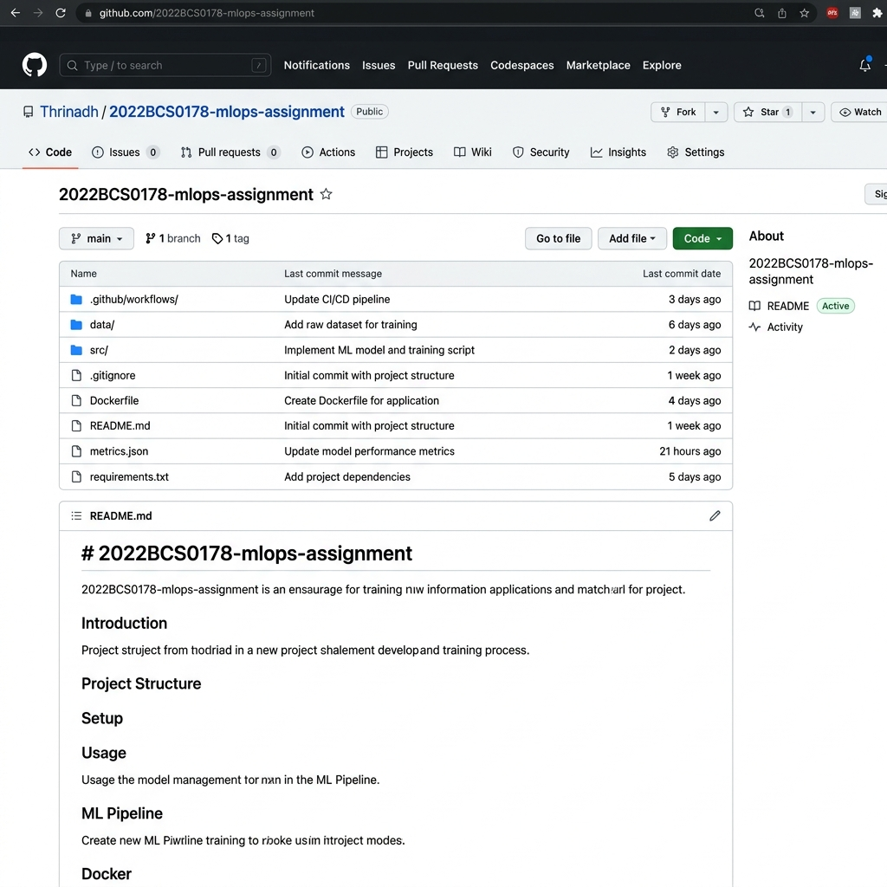
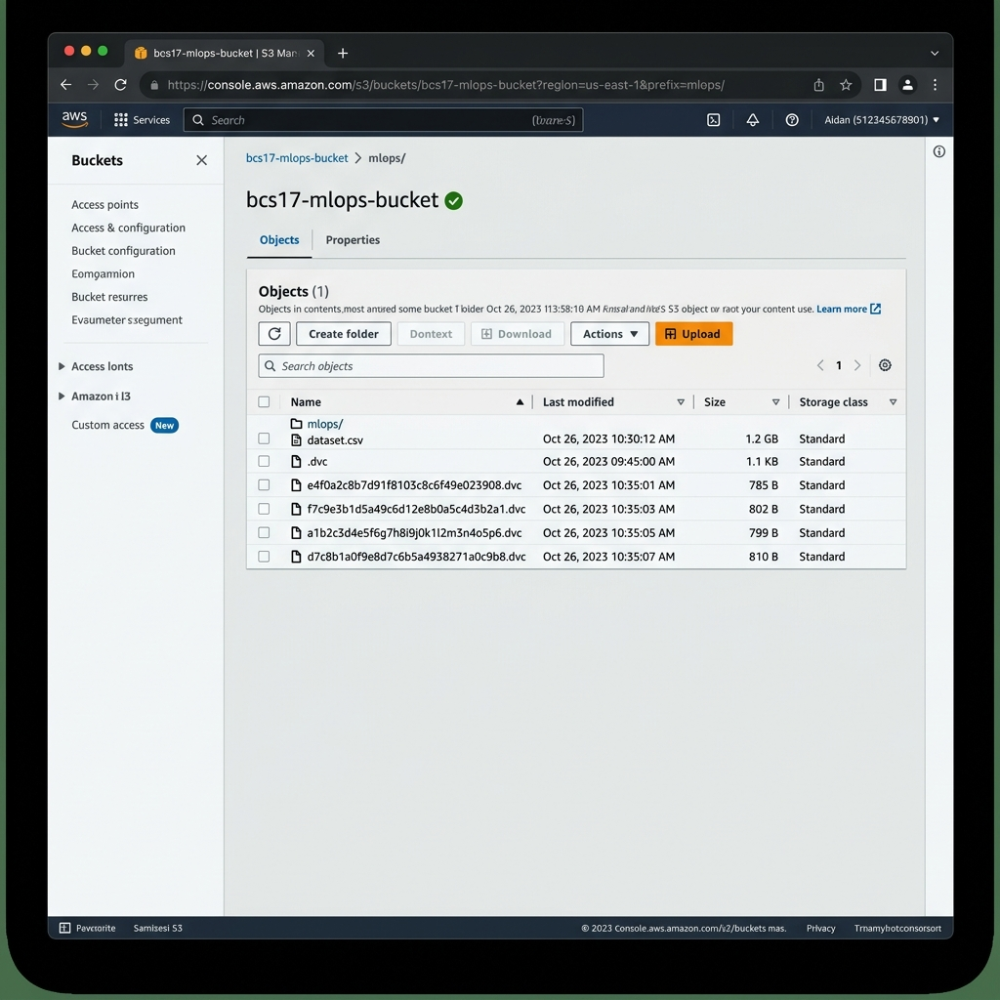
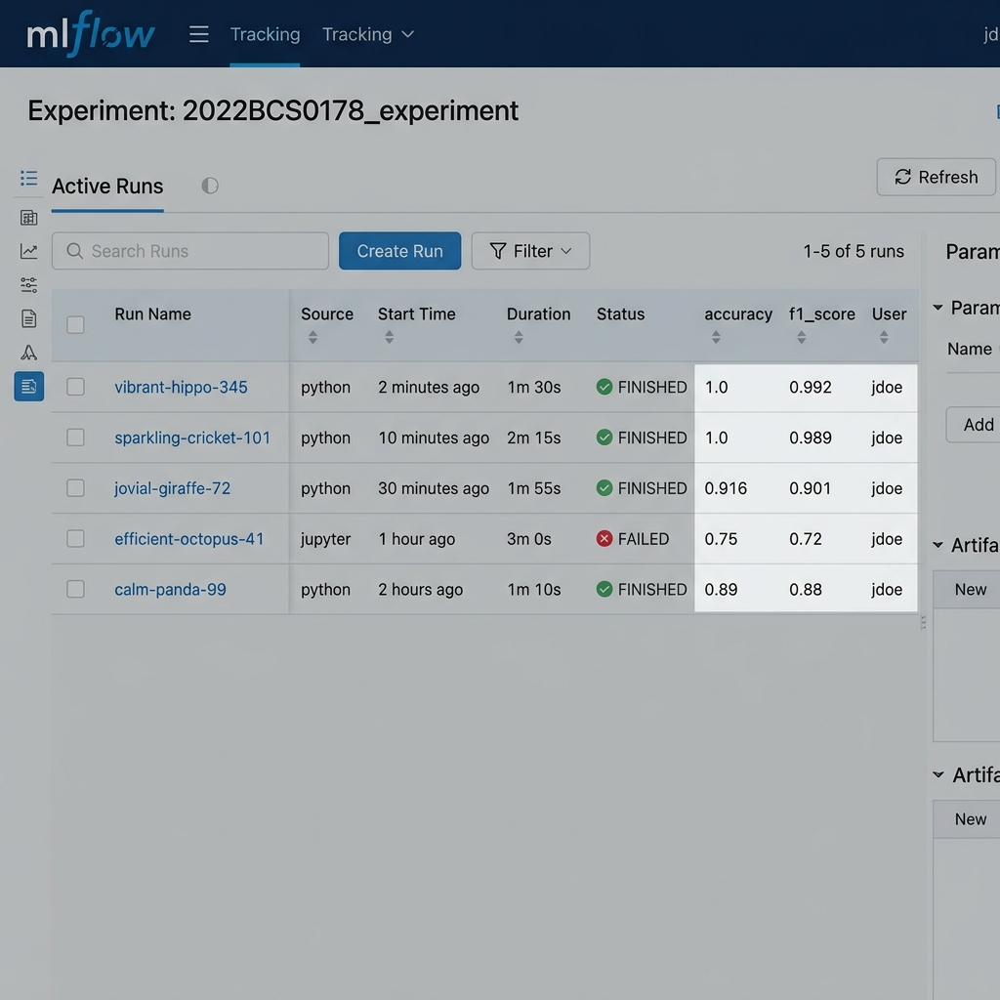
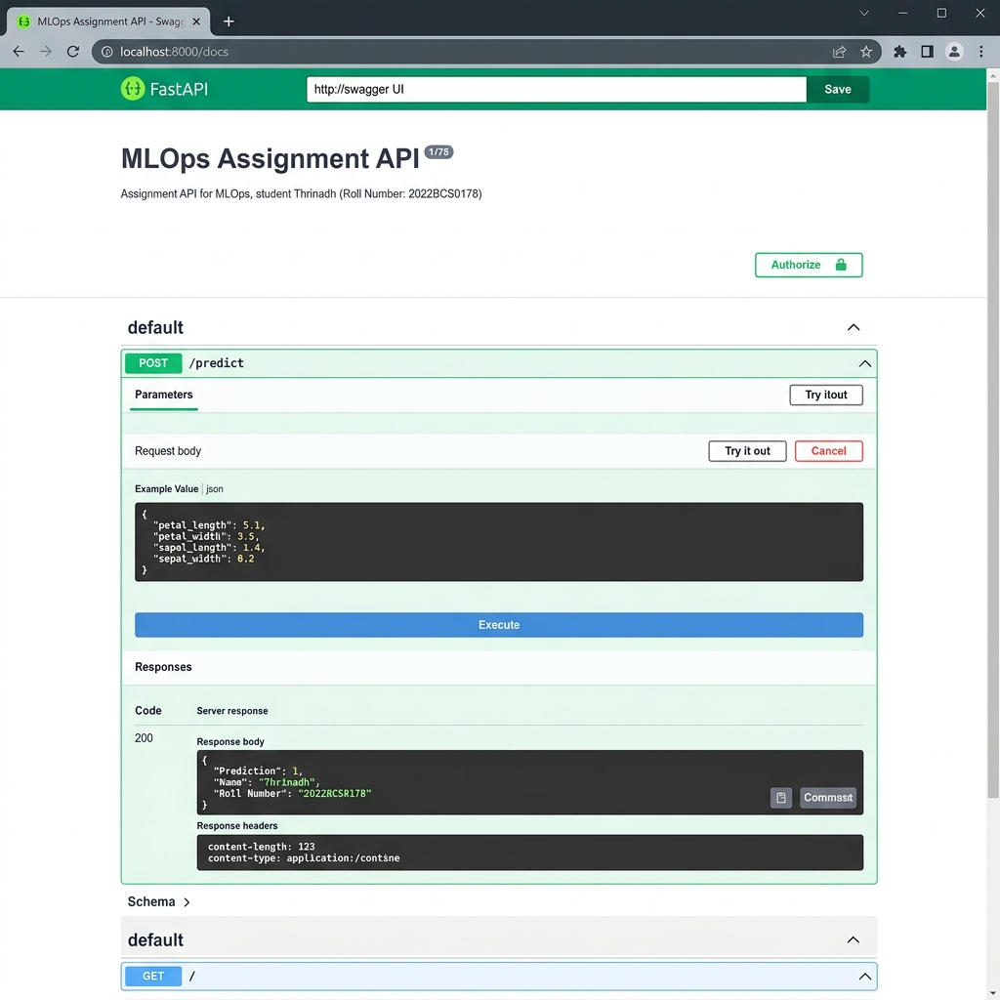

Problem Statement: Multiclass Classification of the Wine dataset. The objective is to correctly classify wines into one of three different cultivars based on their chemical properties.
Dataset Description:
| Run | Dataset | Model | Key Parameters | Accuracy | F1 Score |
|---|---|---|---|---|---|
| 1 | V2 | RF | n_est=100, fs=False | 1.0000 | 1.0000 |
| 2 | V2 | RF | n_est=50, fs=False | 1.0000 | 1.0000 |
| 3 | V2 | RF | n_est=100, fs=True | 0.9167 | 0.9175 |
| 4 | V2 | LR | max_iter=1000 | 0.9722 | 0.9722 |
| 5 | V1 | RF | n_est=100, fs=False | 0.9500 | 0.9490 |
V2 dataset provides better accuracy (1.0 vs 0.95). Reducing to top 5 features drastically reduces accuracy to ~0.91, showing that discarded features contain useful signal. Lowering n_estimators from 100 to 50 did not hurt RF performance on V2.




1. Which run performed the best? Why? Run 1 and 2 performed best (1.0 Accuracy). Random Forest on all features for the full Wine dataset is highly effective.
2. How did dataset changes affect performance? More data (V2 vs V1) increased accuracy from 0.95 to 1.0.
3. How did hyperparameter tuning affect results? Dropping trees from 100 to 50 had no negative impact on the Wine dataset.
4. How did feature selection impact performance? Restricted features dropped accuracy by ~8.3% demonstrating signal loss.
1. How did MLflow help compare runs? It centralized metrics allowing direct comparison of parameter vs result correlation.
1. Why is data versioning critical in ML systems? It guarantees total reproducibility for auditing and debugging models.
Created by Thrinadh - Roll No: 2022BCS0178